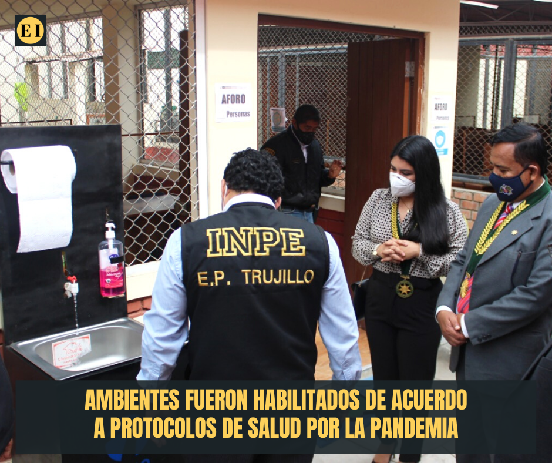

ESTADOS UNIDOS TIENE NUEVO PRESIDENTE ELECTO.
Finamente el demócrata Joe Biden ganó las elecciones presidenciales en los Estados Unidos de norteamérica al superar la barrera de los 270 votos electorales, relegando a su adversario Donald Trump quien pretendía la reelección.
Biden logró ganar en el estado de Pensilvania los 20 votos electorales dandole un total de 284 votos electorales a nivel nacional, donde Trump tenía (en teoría) un claro favoritismo. Así mismo, gana con más de 73 millones de votos al momento, un número jamás alcanzado antes por un candidato; mientras que Trump suma casi 70 millones.
A través de un comunicado el presidente electo de EE. UU., Joe Biden dijo estar agradecido con el pueblo estadounidense. "Me honra la confianza que el pueblo estadounidense ha puesto en mí y en la vicepresidenta electa (Kamala) Harris", señaló.
Por su parte, la campaña de Trump ya ha dicho que no concederá la derrota, hecho que suele poner fin tradicionalmente a la batalla electoral. Y es que Trump es el primer presidente desde los años 90 que no repetirá mandato. Finalmente, Biden será el presidente del país en enero próximo a la espera del resultado de los desafíos legales al conteo presentados por la campaña de Donald Trump en varios estados.
PRESOS VOLVERÁN A RECIBIR ASESORÍA LEGAL DENTRO DEL PENAL EL MILAGRO.

A partir del 2 de noviembre, los reos del centro penitenciario El Milagro de la ciudad de Trujillo volverán a recibir asesoría legal dentro de las instalaciones de este penal debido a que se permitirá nuevamente el ingreso de abogados para asesorar a sus defendidos en cada uno de sus casos que los mantienen tras las rejas.
La reapertura del ingreso de los profesionales del derecho se dió luego de que el decano del Colegio de Abogados de La Libertad (CALL), Dr. Marco Moreno Gálvez en compañía de la directora de Defensa Gremial, Abog. Luisa Grados Mesías; del director regional norte del Instituto Nacional Penitenciario (INPE), Abog. Walter Curo Apaza y del director del penal de Trujillo Abog. José Manuel Cabanillas Noriega, realizaran la inspección final y habilitación de los ambientes para la atención de abogados a reos dentro de dicho centro penitenciario.
Los ambientes fueron implementados según los protocolos de salud establecidos por el área de salud del INPE, para el control de la pandemia de la COVID-19, colocando micas de separación, generando puntos de desinfección al ingreso y dispensadores de alcohol dentro de la sala, los cuales se suman a los controles al ingreso como lo son la toma de temperatura, lavado de manos, entre otros; además el CALL informará y advertirá los procedimientos y recomendaciones que los letrados deberán respetar durante su estadía en las instalaciones del penal.
La atención de los abogados y abogadas a los reos en cárcel será de lunes a viernes, en horario de 10:00 a. m. – 12:30 p. m. y de 2:00 p. m. – 3:30 p. m., respetando los nuevos protocolos y normas del establecimiento penal de Trujillo.
Compartir:

Play

Telefono
Compromiso